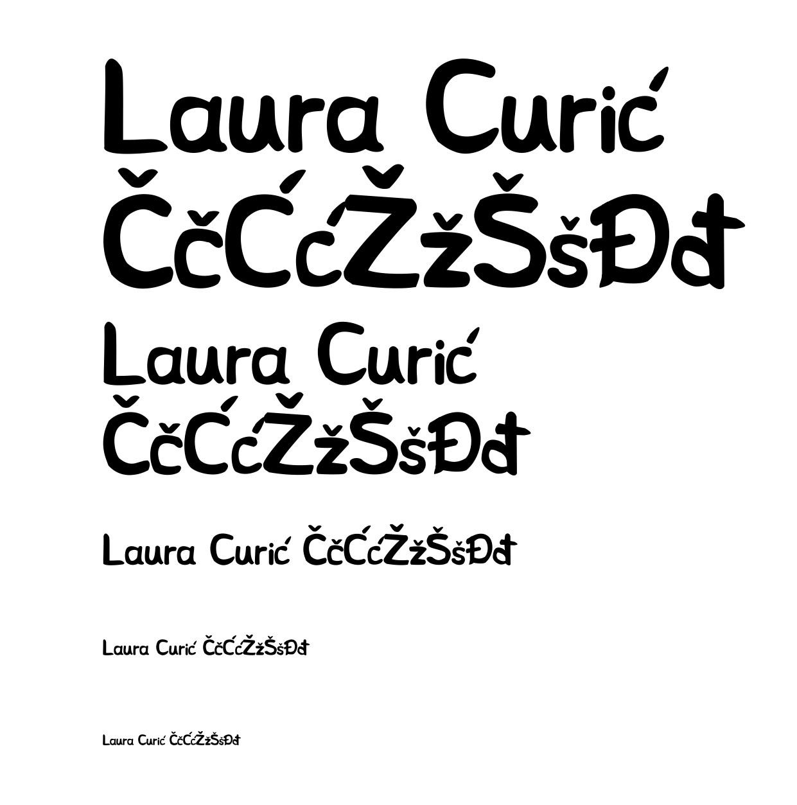
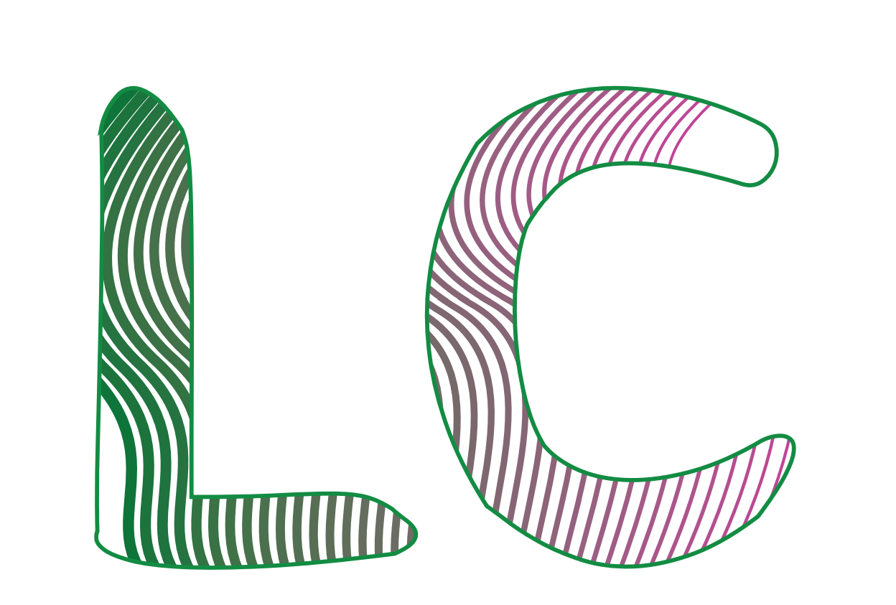
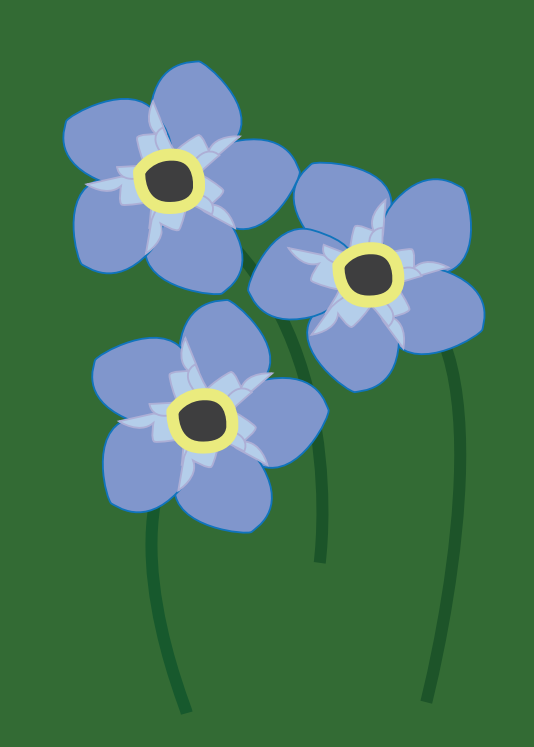
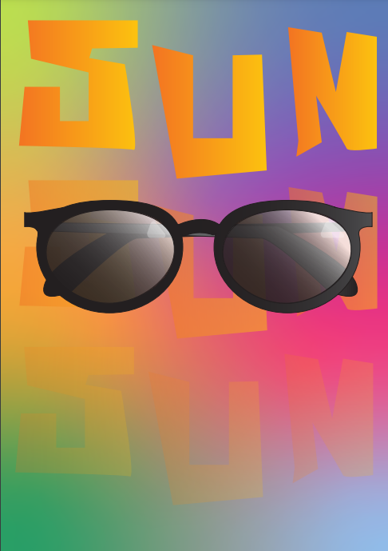
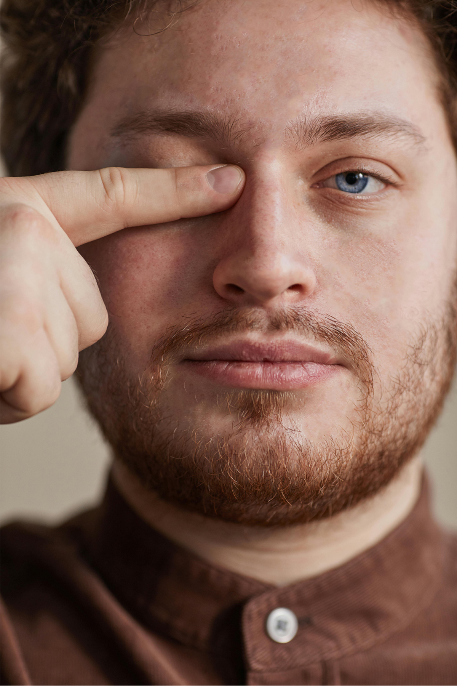
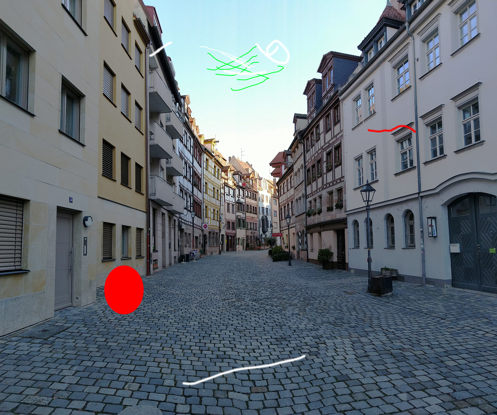
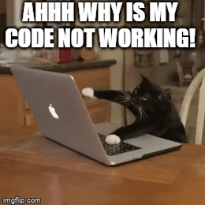

VJEŽBE
Ovaj kolegij se većinom bazirao na digitalnim vježbama koje su bile podijeljene na vektorsku grafiku, piksel grafiku i web/video. Na ovoj stranici sam skupila sve vježbe koje sam odradila te opisala njihov cilj.
VEKTORSKA GRAFIKA
Vježbe iz vektorske grafike su se bazirale na osnivanje vlastitoga fonta u programu poput Fontographer ili FontForge te na bazne funkcije programa Adobe Illustrator/Inkscape.Ova kategorija vježbi mi je bila jedna od dražih jer sam oduvijek htjela znati koristiti Adobe Illustrator.
   1. PROJEKTNI ZADATAK
Za prvi projektni zadatak svi smo dobili jednu fotografiju koju smo trebali rekreirati u odabranom programu, koristeći sve potrebne funkcije koje smo naučili te naš font.


PIKSEL GRAFIKA
Piksel grafika se fokusirala na znanje korištenja programa Photoshop/Gimp, s ciljevima poput retuširanja, koloriranja i fotomontaže. Ove vježbe su mi bile najviše zanimljive jer je ovaj program nešto što mogu koristiti često za razne potrebe.


2. PROJEKTNI ZADATAK
U ovom projektnom zadatku je bio cilj iskoristit sve što smo naučili u photoshopu. Uz zadatak smo dobili zip file sa raznim slikama od kojih smo sami mogli odabrati koje ćemo koristiti za našu fotomontažu uz par vlastitih slika.

VIDEO/WEB
Ove vježbe su se fokusirale na izradu i uređivanje videa i web stranica. od ponuđenih programa ja sam koristila Adobe Premiere Pro za video izradu te Adobe Dreamweaver za Web stranice.

3. PROJEKTNI ZADATAK
Vi trenutno gledate dio ovoga projektnog zadatka. Cilj je napraviti stranicu koja sadrži informacije o meni, mojim odrađenim vježbama te video-reklama koju možete pronaći uz pomoću navigacije na vrhu stranice.
